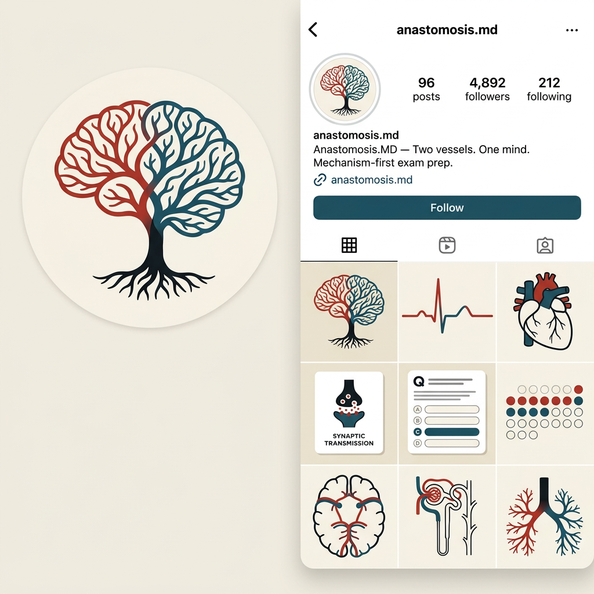
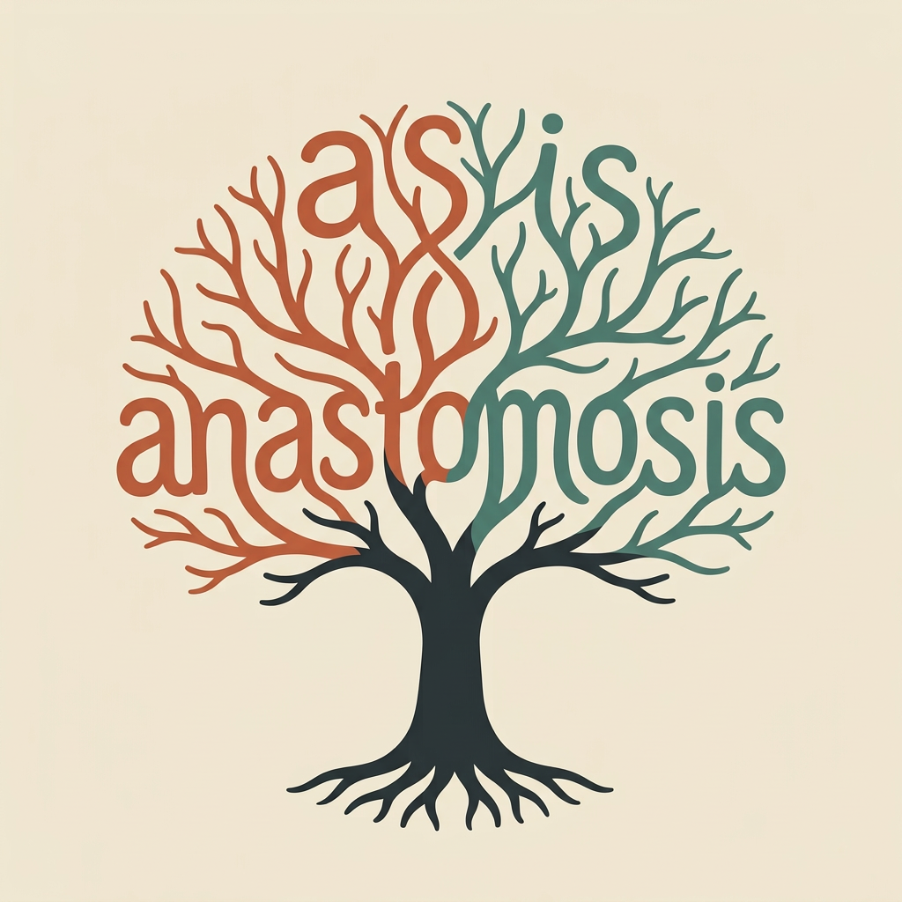
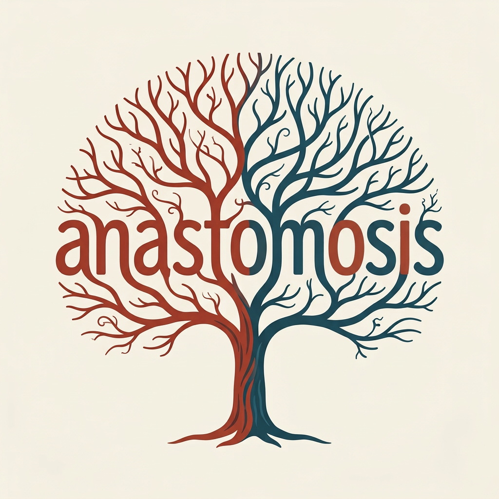
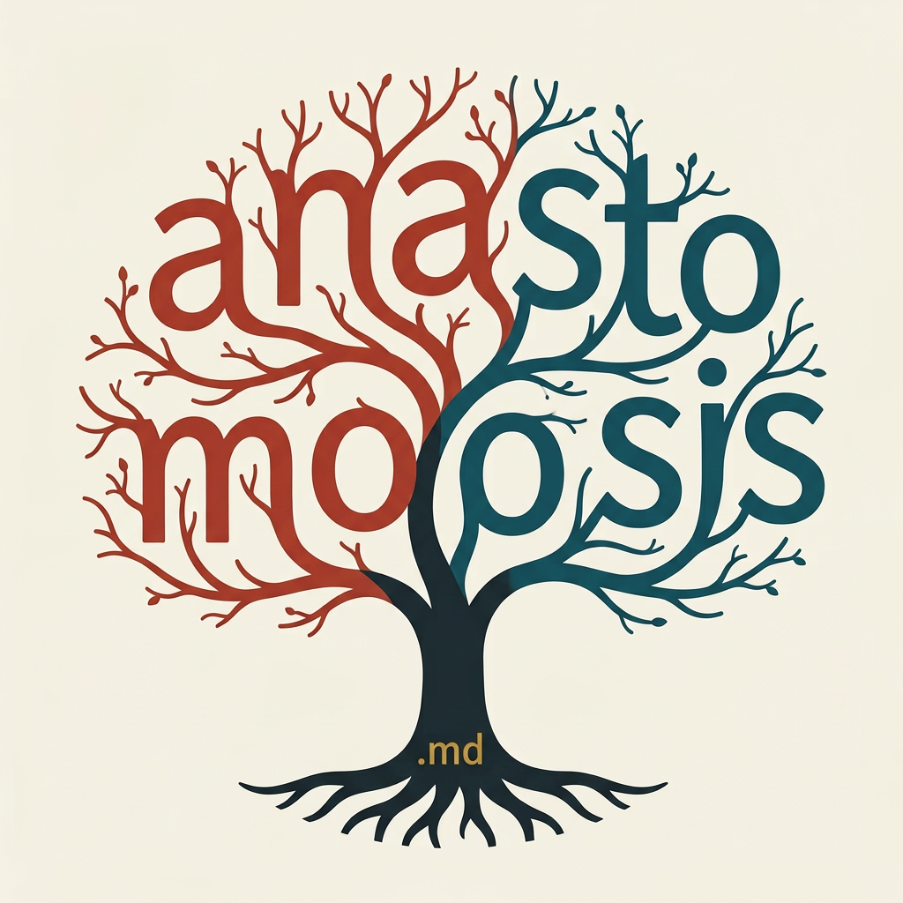

Anastomosis.MD · Logo lab · The tree-word
The branches are the letters
A tree whose crown is the word — trunk to treetop.
Your vision, built: the trunk rises, the branches begin — and the branches are the letters of "anastomosis," filling the entire canopy from the top of the trunk to the very top of the tree. The crown isn't foliage; the crown is the word. In FIN-1's exact style and palette. Nine candidates generated, all through the OCR spelling gate — three verified survivors below.

The reference: FIN-1, the brain tree (seamless) — same line weight, same organic tapering branches, same warm palette on bone, fed directly to the generator.
Tree-word · no .md
tw-2

OCR: "anastomosis" ✓
Letters climbing the crown in connected branch rows, the final letters reaching the treetop.
Tree-word · no .md
tw-6

OCR: "anastomosis" ✓
The climbing structure with the letters pushed larger and bolder — the word as the tree's biggest element, sparse offshoots only.
Tree-word · with .md
tw-8

OCR: "anasto moosis md" ✓ (branch-o's fool the machine — same benign quirk as the original; your eyes confirm)
The climbing tree with a small golden ".md" beside the trunk base.
The gate's receipts (six discarded): tw-1 "ana seo v" · tw-3 "stomo misis" · tw-4 "oseure osis m.md" · tw-5 "tomosis" · tw-7 "aast ks" · tw-9 "ke .md ra" — stacked branch letters are the hardest spelling test in the lab; the machine caught every one before it could reach you. Structural note: all three survivors measured as tall, full-canopy compositions (79–87% canvas height) — real trees, not flat wordmarks.